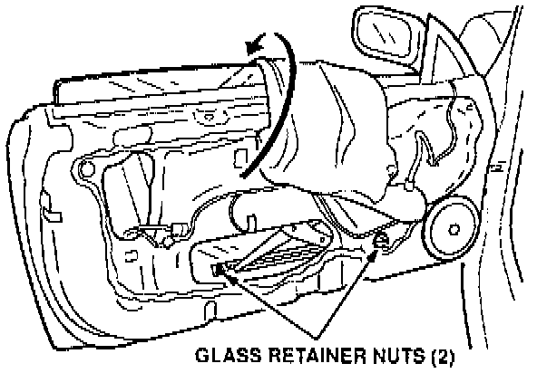
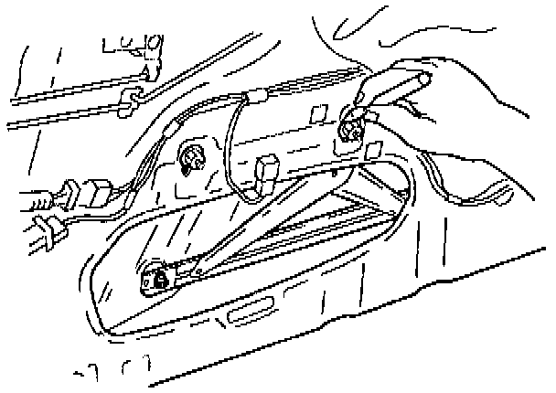
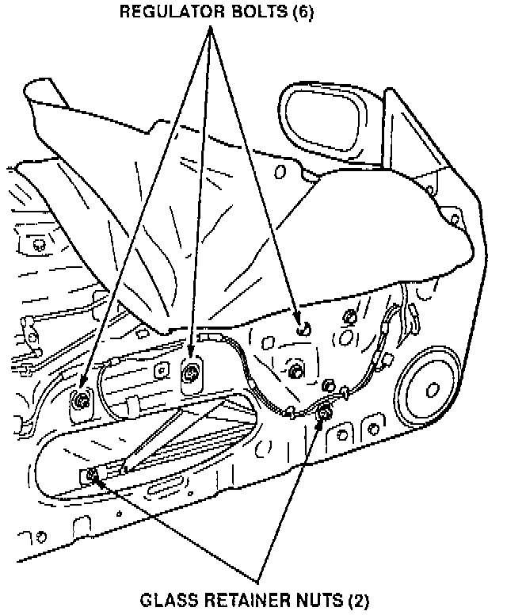
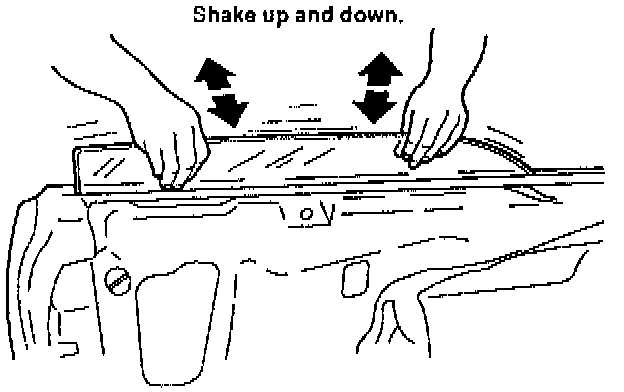
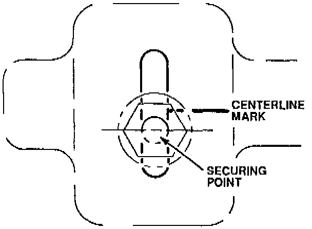
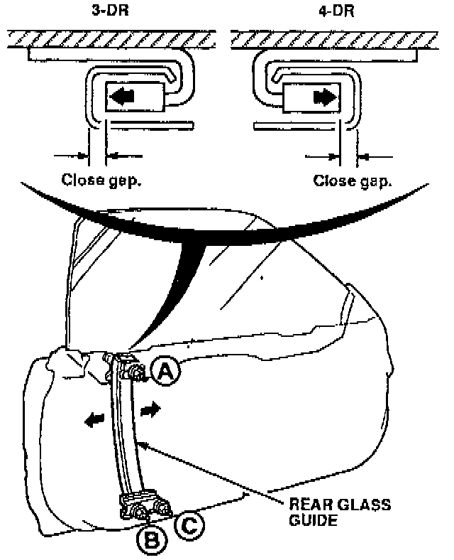
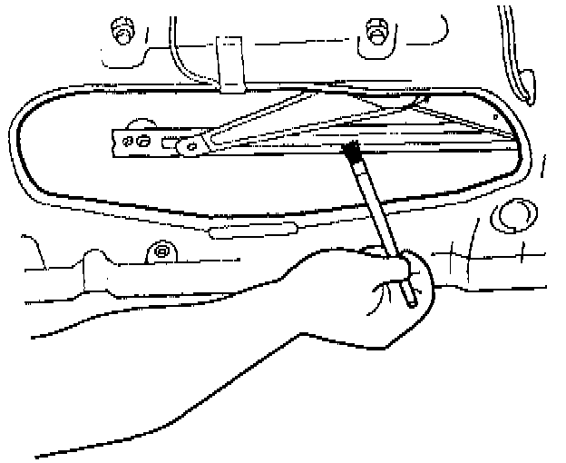

Window Chatter
June 8, 1993BULLETIN NO.
93-011
YEAR
1990-93
MODEL
INTEGRA
VIN APPLICATION
ALL
Window Chatter
SYMPTOM
The glass chatters while going up or down.
PROBABLE CAUSE
The glass regulator is not positioned properly in the door.
CORRECTIVE ACTION
Re-position the glass regulator.

1. Remove the door lining and door panel bracket. Using a single-edge razor blade, cut through the rain shield adhesive. Lift the rain shield high enough to access the glass retainer nuts.
2. Raise the window slightly to re-position the regulator so you can loosen the retainer nuts

3. Trace around the hold-down bolt in the slotted regulator roller guide with a felt-tip marker.

4. Loosen the six regulator bolts two turns, and loosen the two glass retainer nuts two turns.

5. Hold the glass by the top edge with both hands, and shake the glass up and down.
6. Check the traced mark on the slotted regulator roller guide.
^ If the mark is lower than the center of the slot, tighten the six regulator bolts without moving the regulator roller guide.

^ If the traced mark is higher than the center of the slot, move the regulator roller guide hold-down bolt to a position below the center, and tighten the six regulator bolts.

7. Close the window fully, and loosen bolts A, B, and C to loosen the rear glass guide.
8. Move the rear glass guide up against the nylon guide on the window, and tighten the nuts.

9. Apply lithium grease to the glass regulator guides as shown.
10. Open and close the window a few times before reinstalling the door panel. If the window still chatters, adjust the regulator by tightening the hold-down bolt further down in the slotted regulator roller guide.
11. If the chatter has been eliminated, reinstall the plastic door liner, the door panel bracket, and the door panel.
12. Check the fix by closing the door and operating the window again.
WARRANTY INFORMATION
In warranty:
The normal warranty applies.
Out of warranty:
Any repair performed after warranty expiration may be eligible for goodwill consideration by the District Service Manager. You must request consideration, and get the DSM's decision, before starting work.
Operation number: 826320 - Left
827320 - Right
Flat rate time: 0.6 hour
Failed P/N: 72251-SK7-003
Defect code: 042
Contention code: 807